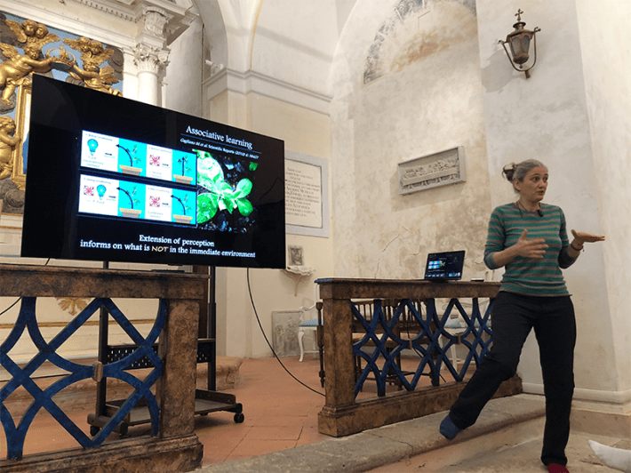
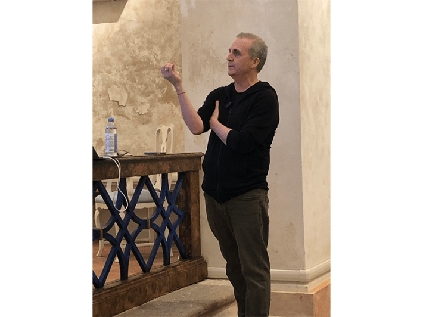
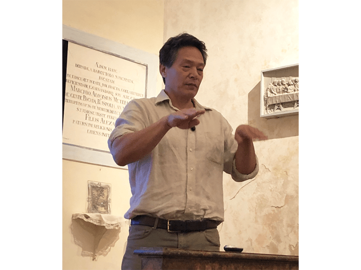

Marcelo Gleiser rang the church bell to marshal us inside. The clangor cut across a hushed landscape. We were in the Tuscan countryside on an impossibly green hilltop, nothing but sheep bleating in the distance, and the creak of iron gates, flanked by carved stone lions, at the end of a gravel drive lined with Italian cypress trees.
The church belongs to Gleiser, a Dartmouth cosmologist and author most recently of The Dawn of a Mindful Universe: A Manifesto for Humanity’s Future. It came with the villa he bought here above the town of Moteroni d’Arbia. Gleiser fixed up the 500-year-old chapel with a dream of turning it into a think tank and named it the Island of Knowledge.
We were here to come up with a new definition of intelligence. The old one, according to Gleiser, won’t do. “We have an ideology of infinite growth on a finite planet,” he said. “That’s obviously not sustainable. What kind of intelligence are we using to create this scenario? That keeps me up at night.”
To expand the definition of intelligence, Gleiser brought together cognitive neuroscientist Peter Tse; astrophysicist Adam Frank; evolutionary ecologist Monica Gagliano; philosopher Evan Thompson; technology critic and essayist Meghan O’Gieblyn; and Indigenous scholar Yuria Celidwen.
Inside, the church was small but grand. White stucco walls arched into a vaulted ceiling; colorful rugs were strewn across the terracotta floor. In place of wooden pews were comfortable armchairs. Celidwen, an Indigenous woman of Nahua and Maya lineage from Chiapas in southern Mexico, walked toward the dais, stood in front of the altar and blew into a small clay flute.
Poems would be recited. Tears would be shed. We weren’t allowed to wear shoes.
She produced a haunting melody. The scientists were rapt. I could see the earnestness on their faces, and Gleiser’s most of all—a belief that whatever was about to happen in that church had the potential to save the world. Suddenly, Gleiser’s dog burst into the church and bounded down the center aisle, as if summoned by the song. He stood in front of Celidwen, ears perked at attention and barked. Celidwen repeated the melody.
Celidwen looked around the church, its iconography replete with reminders of colonialism. She asked if we could go outside.
The sun was beating down. Celidwen told the scientists to gather in a circle. I hung back against the church door. Celidwen gestured for me to join, and I pointed at my notebook to say, “Just a journalist. Just watching.” She shook her head. Not an option. I set my notebook on the grass and found a place to stand.
Celidwen handed us each a dried leaf, which she produced from a small pouch, then told us to taste it. “Let it explore your palate,” she said. I pretended to comply but palmed mine, wondering what it would be like to be the kind of person who puts a strange thing in their mouth just because someone tells them to. Maybe it would be nice, I thought. To feel so open and part of something. She asked us to lay down in the grass, join hands, close our eyes. My little leaf fluttered to the ground.
This was not going to be a typical scientific conference. Which I suppose made sense when you’re trying to overhaul typical scientific ideas. Poems would be recited. Tears would be shed. We weren’t allowed to wear shoes.
I tried my best to keep an open mind.
Intelligence is usually understood as the ability to use reason to solve problems, skillfully wielding knowledge to achieve particular ends. It’s a linear, deductive, mechanistic view, born in the Renaissance (which bloomed not far from here) and fully embraced by science after a workshop not so different from this one.
In 1949, at Manchester University, a computer scientist, a chemist, a philosopher, a zoologist, a neurophysiologist, and a mathematician got together to debate whether intelligence could ever be instantiated in machines. One of the participants, Alan Turing, inspired by the discussion, went home and wrote up his “imitation game,” now known as the Turing test, where a machine is dubbed intelligent if, through text conversation alone, it can fool us into thinking it’s human.
ANCIENT WATERS:Indigenous scholar Yuria Celidwen enjoys thermal water that once powered a medieval mill in the Tuscan village of Bagno Vignoni. Photo by Steve Paulson.
Seventy-five years later, we’ve got chatbots acing the Turing test, and science conceiving of brains as Turing machines. Is it possible we’re missing something? The roboticist Rodney Brooks once lamented our “intellectual cul-de-sac, in which we model brains and computers on each other,” each model a mirror reflecting the other, with no understanding of how understanding comes in.
Inside the church, I could feel Gleiser’s urgency as he launched the discussion. Could the world agree on a new definition of intelligence before our collective stupidity destroys us?
In the usual way of thinking, one starts with a problem, applies intelligence, then arrives at a solution. That works great for Turing machines, whose intelligence comes down to the ability to follow explicit rules, or algorithms. But when we turn around and apply it to ourselves, administering IQ tests like Turing tests in reverse, designed to see how well a human can perform like a machine, we fail to capture the essence of living intelligence. Living intelligence, Thompson said, isn’t so much about solving problems as it is about defining problems in the first place.
Problems arise for living systems precisely because they need to keep on living. And they do that, Thompson explained, through “autopoiesis,” the biological process of self-creation and self-maintenance by which a cell or organism builds itself, over and over again, through its interactions with the world. Unlike a living creature, nothing matters to an AI, because the AI is not built out of the consequences of its own actions. When nothing matters, nothing is a problem. Nothing means anything. “People call large language models ‘stochastic parrots,’ ” Thompson said. “But I think it’s insulting to parrots.”
If problem-solving is linear, autopoiesis involves a circular causality that loops through the brain, body, and world. It’s for this reason that the group agreed on a rather radical claim: To understand intelligence, we need a new view of causation. Or rather, an old one, one that goes back to Aristotle’s “final causes” before they were ousted from the scientific method by the likes of Francis Bacon and Galileo. Tse, the neuroscientist, called for a “relational view of causation”; Thompson referred to it as the causality of life, in which, as Kant wrote, “parts reciprocally cause and effect the form of the whole.”
Our old definition of intelligence forces us to act as if we live in a small world.
Thompson, drawing from work by the anthropologist Gregory Bateson, explained how the old view of intelligence “forces a linear structure onto the non-linear and entangled networks that make up the complex systems of the body and its relation to the environment, which Bateson calls the ‘total mind.’ ” When we lose sight of those circular feedback loops, we become blind to the consequences of our actions—how they react back on ourselves and reverberate through the world. If machine-like straight lines are intelligence, then Bateson’s total mind is something more like wisdom.
O’Gieblyn told a story of how, when she was 13 years old, she set out on a quest to become wise. For three years, on the advice of a pastor, she read daily from the Book of Proverbs. “Did this exercise make me precociously wise?” Not exactly. The trouble, she explained, was that at 13, she hadn’t lived much. “It seems that the wisdom of aphorisms can only be grasped in hindsight, after one has arrived at their truth through the ordinary hell of trial and error.”
When an artificial neural network trains on data, O’Gieblyn asked, or is told what’s right and wrong by a human supervisor, does that result in intelligence? “Or is that a little too much like a 13-year-old girl thinking she can become wise by underlining her favorite proverbs in her study Bible?”
Aphorisms, algorithms, Thompson said, they’re “late to the party.” They are small bones fossilized from the messy body of lived experience. Take that experience away, and the intelligence goes with it.
I skipped the morning Qigong ceremony the next day and slipped into the church as the group was resuming discussions. Frank suggested that the planet exercises its own form of intelligence. “I’m not talking about consciousness,” he clarified. “Intelligence.”
It’s an idea that goes back to James Lovelock and Lynn Margulis’s Gaia theory: the proposal that the biosphere (the sum total of life on Earth) is self-regulating. Just as a cell’s metabolic network produces the components of which it’s made, including its membrane, which allows it to persist, life on Earth, according to Gaia, is an autopoietic-like network that produces itself and the atmospheric boundaries that allow it to continue existing.

PLANT WISDOM:Ecologist Monica Gagliano’s experiments have shown that plants learn from experience, altering their behavior in response to environmental cues from their past. Photo by Steve Paulson.
“Gaia was a really important idea,” Frank said. Until the New Agers got a hold of it in the 1970s. Frank showed a photo of “neopagans” Oberon and Morning Glory Zell-Ravenheart, dressed in full hippie garb, crouching beside what appeared to be a small unicorn. “Yes,” he said, “that’s a unicorn. Somebody took a goat and glued a horn to the top of its head.” (It wasn’t glue; Oberon, a self-declared wizard, had patented a surgical procedure exclusively for unicorn production.)
But the fact remains that for 4 billion years, the geosphere and biosphere have been shaping each other’s evolution. Early in Earth’s history, Frank explained, the biosphere was “immature”—it drew matter and energy from the geosphere but didn’t have enough interconnections to act back on the planet in ways that would stabilize the system, so it was always at risk of running itself into the ground. Then came the “great oxygenation event”—which wasn’t so much “great” as “nearly disastrous.” Some 2.4 billion years ago, life invented photosynthesis and flooded the atmosphere with oxygen, which was poison to most living things at the time, leading to a mass extinction and sending the climate plummeting into an ice age.
Luckily, the system righted itself. Life invented a new form of metabolism, one that used oxygen, which in turn covered the energy cost of multicellular life. Oxygen in the atmosphere formed the ozone layer, which shielded life from fatal ultraviolet radiation. Life and Earth, they were finally in balance—the biosphere had matured.
“Now if there’s a solar flare,” Frank said, “and sunlight increases by 10 percent, certain bacteria will start spawning, generating chemicals which then flow out into the atmosphere, changing the Earth’s reflectivity, which brings the temperature back down.” It’s exactly the kind of autopoietic circular causality that is, according to Thompson, the mark of living intelligence.
But now, on top of the biosphere, we have the “technosphere”— the sum total of human activity; technology, transport, communications systems. And the technosphere, Frank, is “is not self-maintaining, it’s the opposite. It’s degrading the conditions that it needs to survive. What do we have? Another couple hundred years?”

LIVING INTELLIGENCE:Unlike machines, philosopher Evan Thompson explains, living systems exhibit intelligence through circular feedback loops that produce and maintain themselves. Photo by Steve Paulson.
Gagliano offered up a new perspective: Maybe the only path to a mature technosphere is to re-engage with the biosphere we seem to have forgotten. “Throughout my 15 years working with plants, it has become ever so clear that we are engaging with a lot of intelligence,” she said. “And we’re so fixated on our own intelligence and capacity to solve problems that we don’t realize we don’t have to do it alone as a human species.”
Gagliano told the group that her plants talk to her. She clarified: literally. They tell her things she doesn’t know; offer design specs for her experiments. Sometimes they’re snarky. Sometimes they’re sweet. Surely they can advise us, if we ask for their help.
Tse, the neuroscientist, seemed circumspect, and determined to hang on to a shred of human exceptionalism. He insisted that when we talk about the intelligence of other animals, let alone of plants, we don’t really know what we’re talking about, because we have no way of knowing what they think or want.
Just then, Felix, the dog, trotted over to the church doors and barked. Frank walked over and opened the door; the dog happily ran outside. “Empathy is how we know,” Frank said, walking back to his chair. “We don’t have to model it intellectually. We feel it with our living bodies.”
We all took a field trip to float in Etruscan thermal baths. “When the plants talk to you,” I asked Gagliano as we trudged through a garden to get to the ancient hot springs, “are they speaking in English? In Italian?” She laughed, as if she’d been asked this dumb question many times before and slipped into the rippling pool with the other scientists. I hung back, watching from the sidelines, the scent of sulfur stinging in my eyes.
Later, back in the church, Gagliano spoke about attention. Science’s idea of paying attention, she said, is to come to a pre-given reality with pre-given boundaries and try to describe or represent it, passively, as mere observers. “But this denies the porousness of the body,” she said. “The feeling body is not only irrelevant but antithetical to science.”
I started to understand: The point wasn’t whether the plants were talking; it was that she was listening. And when you listen—not passively, but porously—you begin to hear astonishing things.
People call large language models ‘stochastic parrots.’ I think it’s insulting to parrots.”
Gagliano described an experiment where she and some physicists wired up spruce trees in a forest in the Dolomites to record their electrical signals. They were monitoring the signals when the trees suddenly synchronized their behavior—first the oldest trees, then the younger. Fourteen hours later, there was a solar eclipse.
According to Gagliano, it was as if the oldest trees remembered the signs—the strange tugs of gravity coming from the celestial alignment—and spread word through the forest to take action in advance, to preserve their water. As Gagliano put it, the older trees were saying, “Hold your hydraulic potential!”
Their sample size was too small to draw grand conclusions, but the results were enough to raise grand questions. Questions you wouldn’t ask if you assumed from the start that trees can’t remember or learn or communicate; if you assumed, that is, that intelligence resides in singular brains alone.
During a coffee break, I asked Celidwen. “In your culture, do people think of the mind as in the head?” She let out a hearty laugh. “Of course not.”
Later, when we were all sitting in a circle wrapped in blankets in the unheated church, she told a story.
“When I was a child, my assimilated teacher told me that I wasn’t very intelligent,” Celidwen said. “I went home to my dad and asked him, what is intelligence? He said, I don’t know what your teacher meant, but we think of intelligence as the way we nourish our relationships. The better you are at caring for all our siblings”—our fellow humans, animals, plants, the elements of the Earth—“the more intelligent you are. My grandmother understood all the gossip of the birds, when to plant, when to cultivate, when to harvest, and the language of the water and wind. She only studied until the first year of elementary school, but she was profoundly wise.”

ARISTOTLE IN THE BRAIN:Neuroscientist Peter Tse argues for bringing Aristotelian causes—agency and purpose—back into science. Photo by Steve Paulson.
Something seemed to click in the room. The questions we’d been asking about who has intelligence—birds? ferns? machines?—had been utterly beside the point because intelligence is not something one has. It’s something one participates in, the tangled feedback loops that make up this whole interwoven planet. We’re intelligent if our participation keeps the system healthy, and stupid if we eat through it like a cancer.
Gleiser’s wife, Kari, a trauma psychologist, showed the group a video of the famous “still face experiment” to demonstrate what happens when relational intelligence breaks down. In the video, a psychologist instructs a mother to interact normally with her baby—talking, cooing, making silly faces. Then, she’s told to freeze. The baby tries to engage the mother; the mother doesn’t react. The baby tries harder. Nothing. The baby begins to wail. It’s hard to watch. You feel it in your chest. You feel for the confused baby, of course, but you feel worse for the mother, forced to deny all her own instincts, to stop her body from doing what it knows, responsively, responsibly—intelligently—to do.
By the end of the week, I began to feel it in my chest: Science had gotten intelligence wrong.
Back at that 1949 workshop, Turing found himself debating the scientist and philosopher Michael Polanyi. What Polanyi argued at that meeting was that human intelligence has a component that can’t be stated in propositional terms, and therefore can’t be mechanized as AI, a “tacit knowledge,” he called it, saying, “We know more than we can tell.”
Thompson had said AI functions in “small worlds”—realms of narrowly defined problems in search of formal solutions, purposeless billiard games of cause and effect, lacking context and meaning and care.
Our old definition of intelligence forces us to act as if we live in a small world. A world where trees can’t remember eclipses and the planet is a dumb, spinning rock. Only we know—somewhere deep in our biology, in our total mind—that the world is so much bigger. That we are so much bigger. Yet we stare at it, still-faced, hanging back against the church door.
“Those leaves,” I asked Celidwen, “the ones you gave us to put in our mouths on the first day—what were they?” I was kicking myself for having been so stubborn then.
“It’s from a native plant of Coelhá, where I was born, that is called mummun,” she said. “In the Indigenous lore of the area, it is used in ceremony to bring people together, to enhance “heart relationships,” or relationships based on emotional intelligence.”
It occurred to me that if intelligence is participation in big, messy cycles of activity and self-regulation that loop through the whole system of life on Earth, then our job is not really to join in. Our job is to realize that we’re already in. That we exist in relation from the start, linked through gravity, oxygen, language, through lines of evolution and adaptation that stretch back billions of years. That we know this—not as one knows an aphorism, but tacitly and totally. That the real work is to trust in the intelligence all around us, in all the things we know but can’t tell.
As the final meeting wound down, I found myself alone in the church with Gleiser. He was gazing at one of the paintings on the wall, The Temptation of St. Anthony. Artists throughout history, including Hieronymus Bosch and Michelangelo, have depicted St. Anthony being seduced by Satan to indulge in wealth and glory. But this version, by Italian painter Rutilio Manetti, is unusual. “The weird thing is that the devil is wearing glasses,” Gleiser said. “It’s reason tempting faith.” 
Read more from Nautilus on the scientists, philosophers, and ideas at the conference:
“What Science Forgets” Human experience must be factored into science. The authors of a new manifesto argue why.
“Guided by Plant Voices” Plants talk to this ecologist. They tell her how to do better science.
“Consciousness, Creativity, and Godlike AI” American writer Meghan O’Gieblyn on when the mind is alive.
“Never Underestimate the Intelligence of Trees” Plants communicate, nurture their seedlings, and get stressed.
“Is Life a Form of Computation?” Alan Turing and John von Neumann saw it early: the logic of life and the logic of code may be one and the same.
EnjoyingNautilus? Subscribe to our free newsletter.
Lead image: fran_kie / Shutterstock